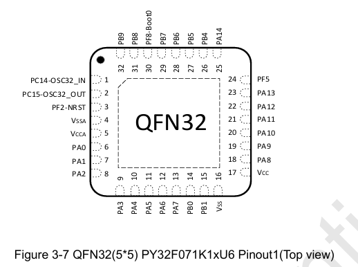
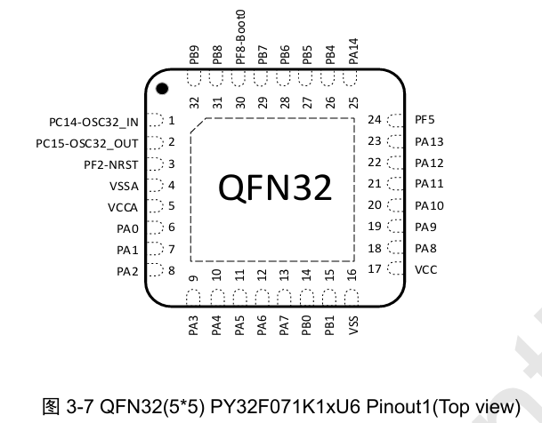

什么？SWD电平不匹配？那让调试器给py32漏点电！
本文最后更新于 2025年6月16日 上午
SWD电平不匹配，居然可以通过不给芯片供电，只漏电的方式解决！
但……仅仅是这个问题吗？
起因
我在这篇文章中，给py32写了rust usb驱动（阉割版musb IP）:musb - github.com
（hal在这里：py32-rs/py32-hal）
顺便也做了RMK移植：#173 （也遇到了很多幺蛾子，详见一次Stack Overflow的学习，踩坑与疑惑 - Decaday）。这时候py32f071应该是支持RMK最便宜的芯片了。RMK作者Jason用pypad做了一个pypad，但是一直未能点亮。
pinout问题
首先是，py32f071和py32f072的QFN32 pinout居然是不同的！我说你差别就一个can，有必要搞这么多pinout吗？（py32f030的die的tssop20也搞了不下十种pinout）


于是，只能重新买芯片焊接：

成功跑起来了blinky。
WFI调试问题

试了两片板子，仅烧录一次后，就不能再烧录了。这是为什么呢？
经过Jason的研究，可能是embassy blinky固件导致的。Jason在Rust论坛找到一篇帖子，几乎是同样的症状。当embassy使用异步等待，且没有任务时，芯片会进入WFI模式，等待time-driver的下一次定时器中断。
stm32和py32中有一个允许SLEEP状态下调试的寄存器，因为我这边调试一直很顺利，没有设置这个寄存器也能调试，我最初就没管，这就坑到群主了……
于是，我紧急进行了修复：#33 · py32-hal
调试器电平匹配问题
可是，拉高BOOT似乎还是无法烧录呢？

既然我这没问题，那物理发过来吧（
到手后，确实复现了群主的问题。
- SWD确实有反应，但是不能烧录。
- 拉高BOOT后，有USB DFU识别（Jason是Mac，没有驱动）
经测试，确实是两个问题叠在了一起：
- 程序WFI导致SWD失效问题，解决方案是拉高BOOT；
- 板子是5V供电，而调试器是3.3V，电平不匹配。解决方案是不供电，让调试器通过SWD漏电给芯片，这样电平就匹配了（？？）
所以，同时拉高BOOT+不供电才能解决问题。
其实电平匹配问题也是我坑了Jason，在他打板之前，我在我的板子上切换5V供电，尝试了下没问题。因为5*0.7=3.5略大于3.3，所以电平匹配问题可能并不能在所有条件下复现。（Jason真是被我坑惨了）
那么，为什么漏电可以？
也就是津津乐道的py32无功耗，仅连接SWDIO，SWCLK，GND即可烧录和正常工作，调试器的漏电就能满足芯片要求（甚至能够外部LED微亮），这个特性在好几种情况下都能有效救砖。
于是之后，我将板子又寄回了Jason。

坑好多啊……


几小时后……


漏电达标了……
草，这也太草了

太草了兄弟